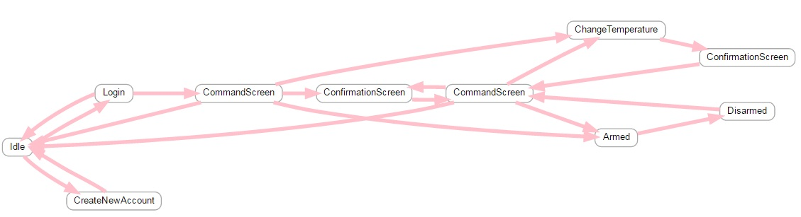

The purpose for this project was to find a way to easely convert technical specifications to user friendly graphical representation.
I considered a smart house type of system for which I have specifications describing the software states of the system.
Let's consider a "smart home" type of system, mounted inside a house.
It will consist mainly of two parts, one will be the hardware part, composed of an alarm mechanism, an air conditioner, a heater, a temperature sensor that will monitor and transmit
the temperature and the lights from the inside the house.
The second part of the system will be an application that runs on a embedded platform which monitors and controls the hardware system. Our focus will be on the functionalities of the application.
Some very brief features of the application will be:
The application state can be very well described with a state machine.
All these features should cover the functionalities that the entire system is capable of, without getting into very technical details, mainly
it will contain the possible states of the system, the possible transitions from one state to another, the actions that the system will do when
a specific state is reached and how the system will react to commands.
My focus will be to model this states and this transitions in a way that it will be easy to read by everybody that is part of this project and also by the potential customers.
Having this specifications file:
Having this specifications in the XML form, we need to create an application that will parse it and eventually display it in a more readable form.
For this first step, parsing the specifications, I used Python. It is very straight forward to use, it is object oriented and with a very
intuitive syntax. The code needs to be kept clean, simple and modular, it is very easy to get ambiguous calls onto objects because you can
create them as you go.
This parser can also encapsulate other specification files like for eg: mapping the screenIds with different screen pictures, or
translate the conditions to more technical ones, globalization or anything that you can think of.
Below a few Python script lines that will parse the XML:
Now we have all the data in a Node object, that contains nodes data and as a linked list contains a tree shaped information map about all states
that are describing the system.
After the parsing step, we will further use Python in order to generate a .gv(vector graphic) file that will be the base for the new face
of our graphical model of the specification XML file.
So, we have our data in the Node object, we need to use it to create the .gv file. To do this, we will write some simple functions:
convertDotGraph runs a process that executed dot.exe with filename as params and some flags set, this is configuration related so we don't need
too pay much attention here.
For running it, of course we will need dot.exe, dot.exe is added when installing Graphviz(http://www.graphviz.org/).
After this step we will have our first graphical form of the XML specifications.

If you need some guidance in engineering field or you're seeking for some help don't hesitate to write me.